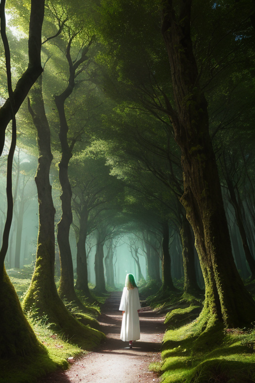
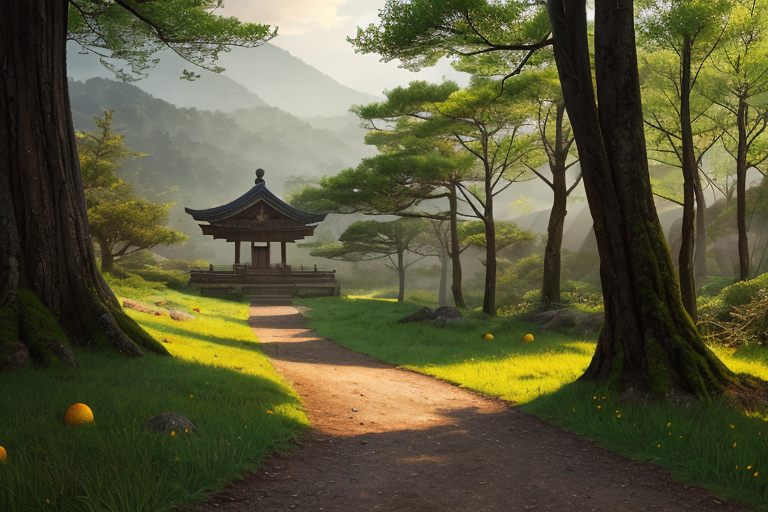
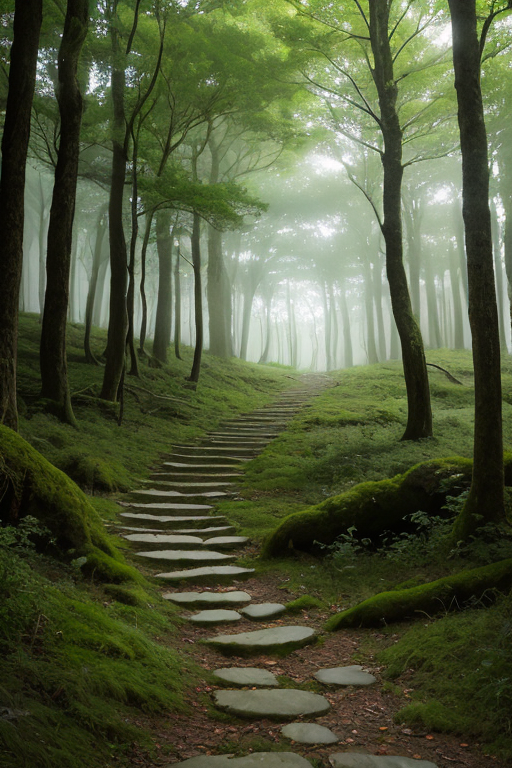
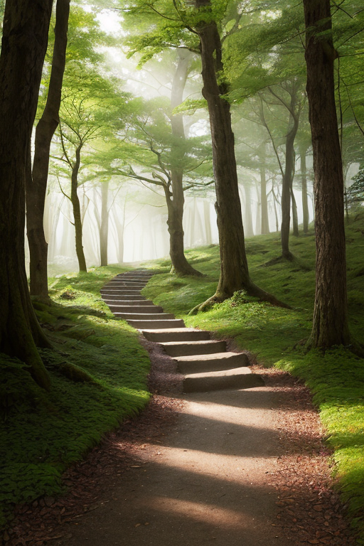

第一章 現実の和歌山
あなたはまだ気づいていない。この土地にも、王がいることを。
熊野古道の石畳は、苔と杉の根に覆われ、静かに山肌を縫う。巡礼者の足音は遠く、代わりに深い森の息遣いが響く。ここは海と山の境界、世界の歪みが集まる列島の中でも、とりわけ濃い「間」だ。太平洋の荒波が紀伊半島の急峻な地形にぶつかり、地中には複雑な断層が走る。巡礼路は、その地質の裂け目に沿って、千年以上も人々の祈りを運んできた。
キイリア・パスウェイは、その道の傍らに立つ。白と緑の光を纏ったその姿は、杉の木立に溶け込み、見る者の目には映らない。彼の役目は、歪みが引き起こす地鳴りを、ほんの少しだけ和らげること。揺れが巡礼路を寸断する前に、古い石をほんの数センチずらし、倒れる巨木の方向を微調整する。彼は災害を消せない。ただ、道が完全に絶たれないように、細心の調整を続けるだけだ。
「あなたの道は続いているか？」
彼は無感情にその問いを発する。かつては、星から与えられた使命を実行するだけの存在だった。しかし、この道に込められた、途切れそうで途切れない人々の想いが、彼の内側に微かな波紋を生み始めていた。

第二章 歪みの兆候
熊野古道、大雲取越。鬱蒼とした杉林に覆われた険しい山道は、静謐そのものだった。しかし、キイリアの目には、見えない。地脈に生じた微かな「ずれ」が、幾筋もの赤い糸のように浮かび上がっている。それは遠く、海の向こうで起きた巨大な地殻変動の余波だ。列島全体が、目には見えない圧力に歪められ始めていた。
「パセラ、信仰波を安定させて。揺らぎが、巡礼者の足元を危うくする」
「畏まりました」
主席妖精パセラが祈りを捧げる。古道に積もった無数の祈りと願いの残響が、微かに共鳴し、地を這う不安定な波動をなだめる。だが、それは対症療法に過ぎない。根本の歪みは深く、確実に進行している。
キイリアは、古道の分岐点に立った。一方は那智の滝へ、もう一方は高野山へと続く。彼は無表情だった。星から派遣された調整者として、最適な経路を計算し、歪みの影響を最小限に抑える方策を選ぶだけだ。しかし、その判断の一瞬前に、ふと、ある老巡礼者がこの分岐で迷い、滝への道を選んだ記憶がよぎった。それは、データではない。感情の残滓だ。
彼は目を閉じ、再び計算を始める。道は続かなければならない。それが使命だ。ただ、その使命を思うこの「何か」が、最近、少し重く感じられるようになっていた。

第三章 王の葛藤
高野山の奥之院。杉木立の静寂に包まれたその空間で、キイリアは自らの内側に生じた「重さ」と対峙していた。それは慈悲と呼ばれる感情の萌芽だった。巡礼者たちの祈り、願い、そして時に絶望が、この聖地に蓄積される信仰の波長。彼はそれを調整するために存在する。歪みが生じれば、熊野古道の一本の枝道を微かに曲げ、巡礼者の足取りを数秒ずらし、崩れかけた岩盤の圧力を一点で受け止める。
しかし今、彼は計算だけでは選べない分岐に立っていた。次の歪みは、ある集落を直撃する経路を取る。最適解は、隣の谷へと巡礼路を一時的に「誘導」し、人的被害を分散させることだ。だが、その谷には今年、ようやく実りを迎えようとするみかん畑が広がっている。農家の老夫妻の、収穫を待ちわびる思いが、データとしてではなく、切ない実感として彼の内側に響く。
道は続かなければならない。使命だ。彼はそう繰り返す。だが、使命とは何か。ただ経路を維持することか。それとも、その上を歩む者たちの「続けようとする意志」を、ほんの少しでも支えることか。
白い光の紋章が、彼の胸の奥で、緑色の翳りを帯びて静かに脈打った。

第四章 妖精との対話
友ヶ島の旧砲台跡に、クマノアは佇んでいた。鉄の腐食とコンクリートの亀裂。人の営みが去った場所は、歪みが溜まりやすい。彼は黙って、巡礼路の妖精としての感覚を研ぎ澄ませる。道そのものは、歩く者がいなくても存在する。だが、道の意味は、そこを歩く者の「続けようとする意志」によってのみ更新されていく。
「王よ」クマノアは振り返らずに呟いた。「巡礼路は、出会いの場であり、別れの場です。熊野古道ですれ違う者たちは、二度と会わない。それでも、ほんの一瞬、同じ道を共有する。その一瞬の重なりが、道に痕跡を残す。巡礼とは、そうした無数の別れの連続を、自らの足で引き受けることではないでしょうか」
キイリアは言葉を失った。彼が調整するのは物理的な経路ではない。この「引き受ける」という、かすかで、しかし確かな人間の意志の連鎖なのだ。彼の内側で、慈悲の感情が、使命という冷たい輪郭を、ゆっくりと溶かし始めていた。

第五章 微調整と余韻
熊野古道の石畳に、朝露が光る。キイリアは、一人の巡礼者が足を滑らせそうになる瞬間、杉の根をほんの少し隆起させた。巡礼者はそれに気づかず、ただ「ありがたい」と呟き、歩みを続ける。王の仕事は、ほとんどがこれだ。転倒を防ぎ、道標を見えやすくし、疲れた巡礼者の背中を押す、目に見えない一押し。それは災害を消す力ではない。ただ、人が自らの道を「引き受ける」その一歩を、ほんのわずか、確かなものにする調整だ。
彼は今、感情を理解し始めていた。巡礼者の「ありがたい」という言葉に宿る、道への感謝。別れの寂しさと、新たな出会いへの希望。それらが、この土地の濃密な感情の波となり、彼の内なる慈悲を育てていた。彼はもはや、無感情な調整者ではいられなかった。彼自身が、この巡礼路の一部となり、その哀歓を背負い始めていたのだ。
夕暮れ、高野山の奥之院に佇むキイリアは、自らに問うた。あなたの道は続いているか？ 答えは、足元に続く無数の巡礼者の足跡のなかにあった。彼は微調整を続ける。それが、彼の巡礼路だから。
あなたの町にも、王がいる。